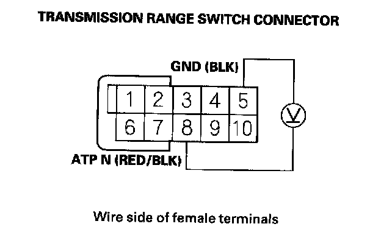
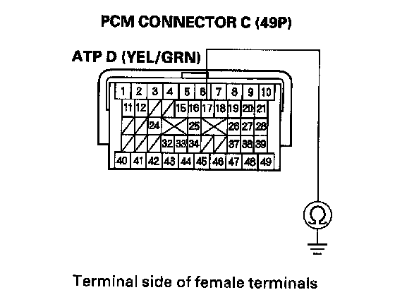

DTC Troubleshooting
DTC P0705: Short in Transmission Range Switch Circuit (Multiple Shift-position Input)NOTE:
^ Before you troubleshoot, record all freeze data and any on-board snapshot, and review General Troubleshooting Information.
^ This code is caused by an electrical circuit problem and cannot be caused by a mechanical problem in the transmission.
1. Clear the DTC with the HDS.
2. Start the engine.
3. With the brake pedal pressed, move the shift lever through all positions. Stop for at least 1 second in each position, and monitor the OBD STATUS for P0705 in the DTCs/Freeze Data in A/T Mode Menu for a pass/fail.
Does the result indicate FAILED?
YES - Go to step 4.
NO - Intermittent failure, the system is OK at this time. Check for an intermittent short in the wire between the transmission range switch and the PCM. If the HDS indicates NOT COMPLETED, return to step 2 and recheck.
4. Turn the ignition switch OFF.
5. Inspect the transmission range switch.
Is the switch OK?
YES - With the switch connector disconnected, go to step 6.
NO - Replace the transmission range switch, then go to step 49.
6. Turn the ignition switch ON (II).
7. Measure the voltage between transmission range switch connector terminals No. 4 and No. 5.
Is there battery voltage?
YES - Go to step 13.
NO - Go to step 8.
8. Turn the ignition switch OFF.
9. Jump the SCS line with the HDS.
10. Disconnect PCM connector A (49P).
11. Check for continuity between PCM connector terminal A16 and body ground.
Is there continuity?
YES - Repair short in the wire between PCM connector terminal A16 and the transmission range switch, then go to step 49.
NO - Go to step 12.
12. Check for continuity between transmission range switch connector terminal No. 5 and body ground.
Is there continuity?
YES - Go to step 43.
NO - Repair open in the wire between transmission range switch connector terminal No. 6 and ground (G101), or repair poor ground (G101), then go to step 49.
13. Measure the voltage between transmission range switch connector terminals No. 3 and No. 5.

Is there battery voltage?
YES - Go to step 18.
NO - Go to step 14.
14. Turn the ignition switch OFF.
15. Jump the SCS line with the HDS.
16. Disconnect PCM connector C (49P).
17. Check for continuity between PCM connector terminal C25 and body ground.
Is there continuity?
YES - Repair short in the wire between PCM connector terminal C25 and the transmission range switch, then go to step 49.
NO - Go to step 43.
18. Measure the voltage between transmission range switch connector terminals No. 5 and No. 8.

Is there battery voltage?
YES - Go to step 23.
NO - Go to step 19.
19. Turn the ignition switch OFF.
20. Jump the SCS line with the HDS.
21. Disconnect PCM connector C (49P).
22. Check for continuity between PCM connector terminal C26 and body ground.
Is there continuity?
YES - Repair short in the wire between PCM connector terminal C26 and the transmission range switch, then go to step 49.
NO - Go to step 43.
23. Measure the voltage between transmission range switch connector terminals No. 2 and No. 5.
Is there battery voltage?
YES - Go to step 28.
NO - Go to step 24.
24. Turn the ignition switch OFF.
25. Jump the SCS line with the HDS.
26. Disconnect PCM connector C (49P).
27. Check for continuity between PCM connector terminal C17 and body ground.

Is there continuity?
YES - Repair short in the wire between PCM connector terminal C17 and the transmission range switch, then go to step 49.
NO - Go to step 43.
28. Measure the voltage between transmission range switch connector terminals No. 5 and No. 7.
Is there battery voltage?
YES - Go to step 33.
NO - Go to step 29.
29. Turn the ignition switch OFF.
30. Jump the SCS line with the HDS.
31. Disconnect PCM connector C (49P).
32. Check for continuity between PCM connector terminal C46 and body ground.

Is there continuity?
YES - Repair short in the wire between PCM connector terminal C46 and the transmission range switch, then go to step 49.
NO - Go to step 43.
33. Measure the voltage between transmission range switch connector terminals No. 5 and No. 6.
Is there battery voltage?
YES - Go to step 38.
NO - Go to step 34.
34. Turn the ignition switch OFF.
35. Jump the SCS line with the HDS.
36. Disconnect PCM connector C (49P).
37. Check for continuity between PCM connector terminal C18 and body ground.
Is there continuity?
YES - Repair short in the wire between PCM connector terminal C18 and the transmission range switch, then go to step 49.
NO - Go to step 43.
38. Measure the voltage between transmission range switch connector terminals No. 5 and No. 9.
Is there battery voltage?
YES - Go to step 43.
NO - Go to step 39.
39. Turn the ignition switch OFF.
40. Jump the SCS line with the HDS.
41. Disconnect PCM connector C (49P).
42. Check for continuity between PCM connector terminal C19 and body ground.
Is there continuity?
YES - Repair short in the wire between PCM connector terminal C19 and the transmission range switch, then go to step 49.
NO - Go to step 43.
43. Reconnect all connectors.
44. Update the A/T software in the PCM if it does not have the latest software, or substitute a known-good PCM.
45. Start the engine.
46. With the brake pedal pressed, move the shift lever through all position. Stop for at least 1 second in each position.
47. Check for DTC(s) in the DTCs/Freeze Data in A/T Mode Menu with the HDS.
Is DTC P0705 indicated?
YES - Check for poor connections and loose terminals at the transmission range switch and the PCM. If the PCM was updated, substitute a known good PCM, then recheck. If the PCM was substituted, go to step 1.
NO - Go to step 48.
48. Monitor the OBD STATUS for P0705 in the DTCs/Freeze Data in A/T Mode Menu for a pass/fail.
Does the result indicate PASSED?
YES - if the PCM was updated, troubleshooting is complete. If the PCM was substituted, replace the original PCM. If any other DTCs were indicated on step 47, go to the indicated DTC's troubleshooting.
NO - If the HDS indicates FAILED, check for poor connections and loose terminals at the transmission range switch and the PCM. If the PCM was updated, substitute a known-good PCM, then recheck. If the PCM was substituted, go to step 1. If the HDS indicates NOT COMPLETED, return to step 45 and recheck.
49. Clear the DTC with the HDS.
50. Start the engine.
51. With the brake pedal pressed, move the shift lever through all position. Stop for at least 1 second in each position.
52. Check for DTC(s) in the DTCs/Freeze Data in A/T Mode Menu with the HDS.
Is DTC P0705 indicated?
YES - Replace the transmission range switch, then return to step 49 and recheck.
NO - Go to step 53.
53. Monitor the OBD STATUS for P0705 in the DTCs/Freeze Data in A/T Mode Menu for a pass/fail.
Does the result indicate PASSED?
YES - Troubleshooting is complete. If any other DTCs were indicated on step 52, go to the indicated DTC's troubleshooting.
NO - if the HDS indicates FAILED, check for poor connections and loose terminals at the transmission range switch and the PCM, then go to step 1. If the HDS indicates NOT COMPLETED, return to the step 50 and recheck.